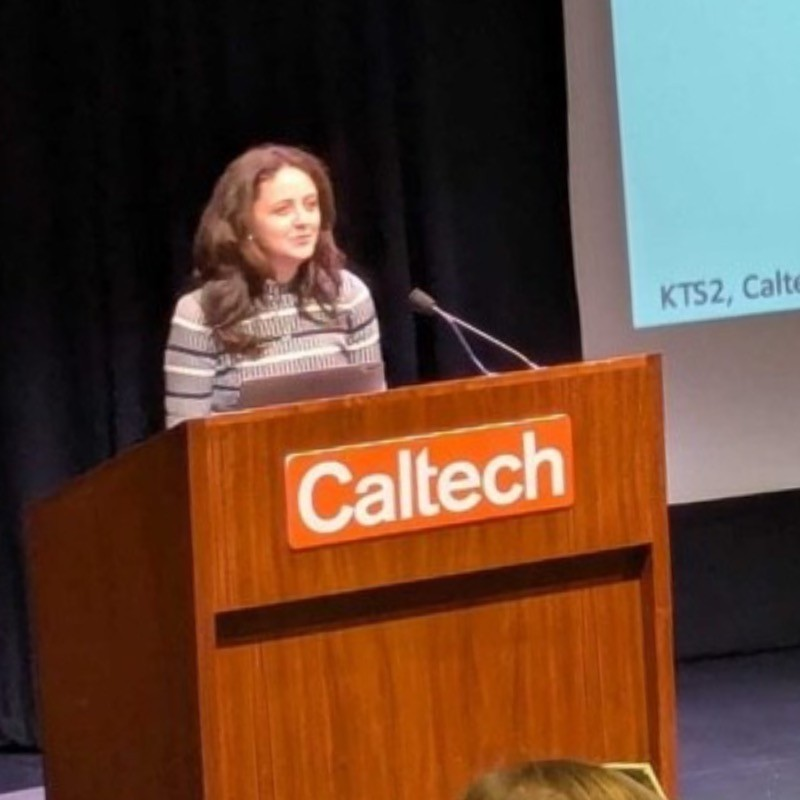
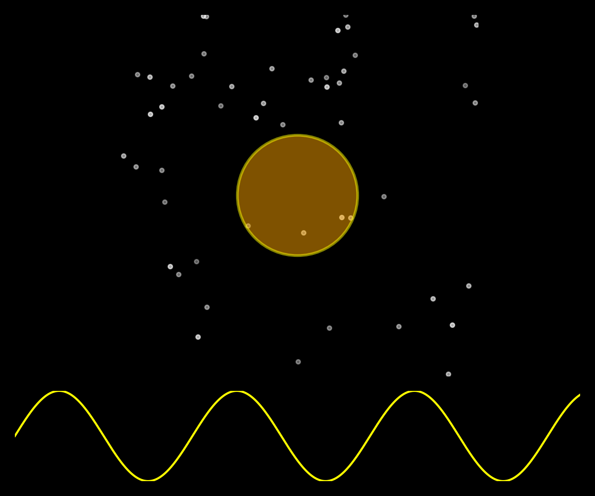

Who Am I?
Hello. I'm Angharad (Anne-Hah-Rudd).
I'm a Postdoctoral Research Fellow at University College London's Mullard Space Science Laboratory.
I'm from Wales, but moved to London to do a BSc in Astrophysics in QMUL (2020), a MSc in Space Science and Engineering at UCL (2021), and Surrey, for my PhD at MSSL (2025).
My PhD focussed on homogeneously characterising exoplanets via their host stars, using data from Gaia and TESS.
I'll soon be a Research Fellow at the University of Sydney, using asteroseismology to study the oscillations and properties of exoplanet host stars.
Learn more about my work here.
...An Astrophysicist

Here's me, giving the last talk of My PhD, at the Know Thy Star, Know Thy Planet conference at Caltech in 2025. If you'd like to invite me to speak somewhere, either for outreach or at your institute, please do reach out. You can find out what other talks and outreach I've done here.
.
...A Sound Engineer?

I'm passionate about electronic music, and in my spare time convert the signals we measure from oscillating stars into funky sounds. Learn more about these, and other sounds I enjoy here.